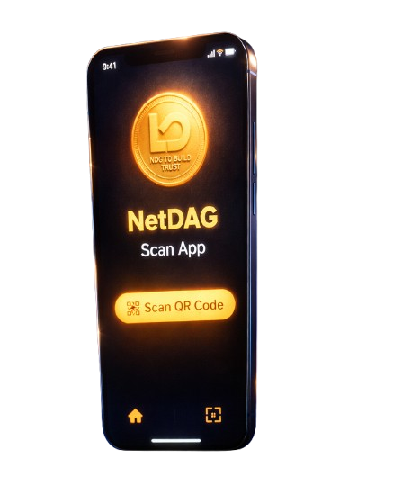
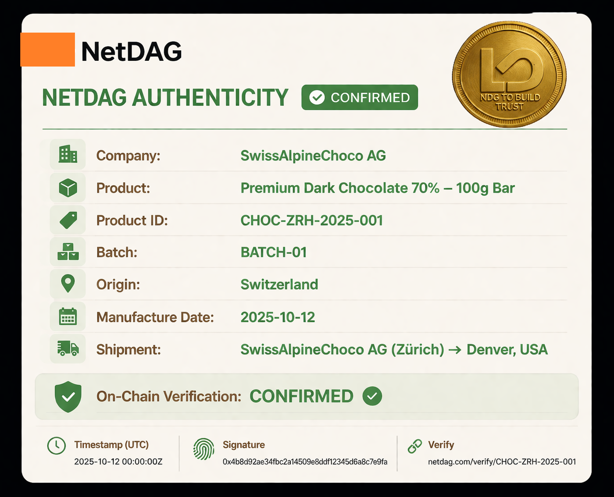

01
Tag the product
A NetDAG QR tag (or compatible QR/NFC label) is applied on packaging or the product itself, creating a unique, scannable identity.

Verifiable authenticity for real-world products — independent, cryptographic, and permanent.
Built for manufacturers, brands, and supply chains that can’t afford ambiguity — across primary sales, resale, warranty, and compliance workflows.
We are solving the global crisis of commercial trust. Built to bind every product — from your morning coffee to limited editions — our technology puts verification power directly into the customer’s hands.
For brands, this means a permanent, tamper-resistant audit trail. For buyers, it means one clear signal: Confidence. The NetDAG Provenance dApp delivers “AUTHENTIC” the moment the code is scanned.
The End of Counterfeiting.
The Dawn of Real Blockchain Utility.
What changes now
We bring smart-contract certainty into daily commerce. Pharmaceutical lots, luxury goods, electronics, and fashion can all be registered, certified, and verified via one unified protocol that scales with demand — authenticity becomes a public good.
A scan reveals tamper-evident batch data, certifiers, timestamps, and movement — anchored to smart contracts, not a brand’s private database.
Simple flow
Scan → Verify → Confirm
The consumer receives a clear, on-chain confirmation badge and a durable receipt of authenticity that can be checked again at any time.
Built for everyday use — at global scale


NetDAG Provenance is open to anyone who needs to verify authenticity — while enabling trusted partners across commerce, logistics, and oversight to contribute signed proof. Anyone can verify. Verified actors can attest. Trust becomes shared, portable, and permanent.
Any customer can scan a product to confirm origin and authenticity in seconds — without relying on marketing claims, proprietary systems, or private databases.
Counterfeiting and grey-market diversion erode revenue and reputation across sportswear, luxury, cosmetics, and consumer goods. Provenance enables independent verification across primary sales, resale, and returns.
As quality improves worldwide, producers face a new challenge: proving authenticity rather than defending against suspicion. Provenance provides a neutral mechanism to show products are genuine, certified, and unaltered across borders and marketplaces.
Logistics providers, certifiers, auditors, and inspectors can issue signed attestations that become part of a product’s permanent record — reducing reliance on siloed databases while preserving accountability and auditability.
Provenance provides tamper-resistant, independently verifiable product histories that support compliance monitoring, enforcement, and cross-border cooperation without dependence on proprietary data silos.

NetDAG Provenance turns authenticity into verifiable proof — by linking each product to a secure identifier, recording signed lifecycle events, and enabling instant checks by anyone, anywhere.
A NetDAG QR tag (or compatible QR/NFC label) is applied on packaging or the product itself, creating a unique, scannable identity.
The manufacturer mints the product record with essential metadata — model, batch/lot, production site, and certification references — without disrupting existing workflows.
Certifiers, logistics providers, auditors, and inspectors can append signed events such as shipment, inspection, custody transfer, recall, or warranty activation — building a permanent history.
Anyone can scan to verify authenticity and view the product’s provenance trail. Verification is universal — attestation is permissioned.
Resale platforms, insurers, and repair networks can confirm history, ownership signals, and condition events — enabling authenticated resale, warranty validation, and recall confirmation.
Regulators and oversight authorities can rely on tamper-resistant product records for market surveillance and compliance enforcement — without depending on proprietary data silos.